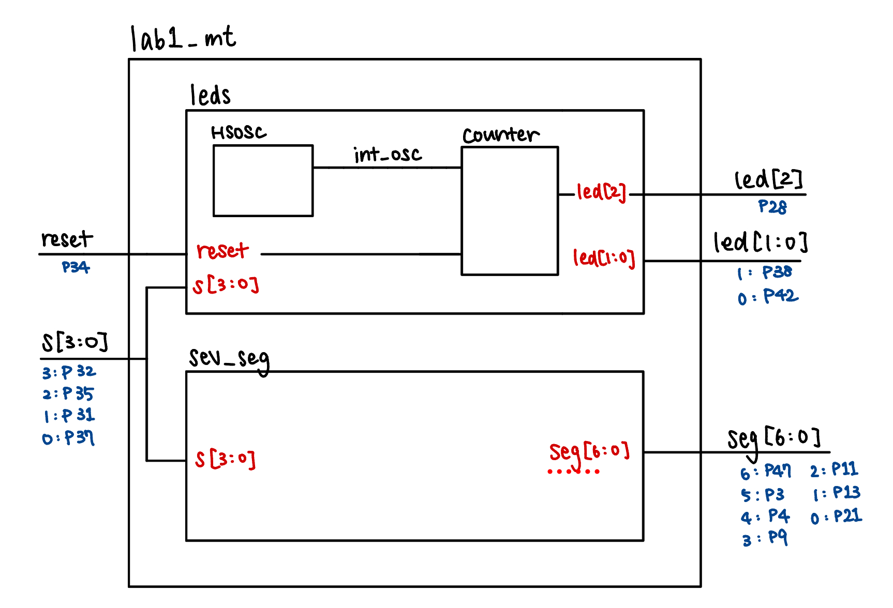

Lab 1: FPGA and MCU Setup and Testing
Introduction
In this lab, the E155 Development Board was assembled for use for the rest of the semester. Preliminary testing was done on both FPGA and MCU components of the board via simple given projects. The primary objective of this lab was to program the FPGA to take binary input from 4 switches and output patterns using 3 LEDs and a seven-segment display.
One of the LEDs was designed to blink at 2.4 Hz by dividing the onboard high-speed oscillator, used as a clock, from 24 MHz. The two other LEDs were each programmed by applying a XOR and AND gate using 2 inputs from the 4 switches, following a truth table given in the instructions. The seven-segment display was programmed to display distince hexadecimal values between 0 to F given a combination of 4 binary inputs through the same switches.
LINK: E155 Lab 1 Instructions
Design and Testing Methodology
For the blinking LED, the onboard high-speed oscillator, named HSOSC as part of the iCE40 UltraPlus primitive library, was used to generate a 24 MHz oscillation acting as a clock signal. Utilizing a counterFor the blinking led, the onboard high-speed oscillator, named HSOSC as part of the iCE40 UltraPlus primitive library, was used to generate a 24 MHz oscillation acting as a clock signal. Aiming for a 2.4 Hz signal, the clock divider was devised to use a counter that, between values of 0-5,000,000, kept the LED off, and between 5,000,000-10,000,000 turned the LED on. This was designed by dividing the 24 MHz clock down to 2.4 Hz requires a counter that reaches 10,000,000, ensuring the LED blinks at the desired frequency with a single on-off cycle per period. Testing for the blinking LED was conducted by an oscilloscope, where one probe was connected to the GND on the FPGA and the other at the anode of the diode.
The other two LEDs were implemented by following the truth tables, as displayed below. These are adapted from the Lab 1 Instructions, as linked above.
s[1] |
s[0] |
led[0] |
|---|---|---|
| 0 | 0 | 0 |
| 0 | 1 | 1 |
| 1 | 0 | 1 |
| 1 | 1 | 0 |
s[3] |
s[2] |
led[1] |
|---|---|---|
| 0 | 0 | 0 |
| 0 | 1 | 0 |
| 1 | 0 | 0 |
| 1 | 1 | 1 |
These tables can effectively be reduced to led[0] being the result of an XOR gate of s[0] and s[1], and led[1] an AND gate of s[3] and s[2].
The seven-segment display was programmed by using combinational logic and case statements in the HDL. Considering the limited current draw of the LED segments, it was necessary to calculate and assign resistors to each segment. Following \(V = IR\) and consulting datasheets for the HDSP-511A display, it was determined that these displays would have a forward voltage of between 1.8 to 2.1 V, and current 5 to 20 mA. Following the supplied 3.3 V, the optimal resistance was calculated by: \[\begin{aligned} R &= \frac{V}{I}\\\\ &= \frac{3.3 - 2}{5*10^{-3}} \\\\ &= 260\, \Omega \end{aligned}\] Considering that the targeted current draw was on the lower end of 5mA, the resistor value was rounded down to 220\(\,\Omega\).
Technical Documentation
The source code for the project can be found in this GitHub repository.
Block Diagram

Figure 1 depicts the block diagram of the design. The top-level module lab1_mt instantiates two submodules within it, one for the LED logic, leds, and another for the seven segment logic, sev_seg. Within the leds module, the HSOSC module was utilized to create an int_osc clock that was fed into a clock divider (that used a counter).
Schematic
Figure 2 depicts the physical schematic of the design. Internal pullup resistors of 100k\(\,\Omega\) were used to ensure that the active low switches and reset button were not floating. The LEDs were each connected to 1k\(\,\Omega\) resistors, and each cathode of the seven-segment display was connected to a 220\(\,\Omega\) grounded resistor.
Results and Discussion
Video Demonstration
This video below demonstrates all possible configurations of the switches and consequently the values of the LED and seven-segment display.
Testbench Simulation
The design met all intended design objectives. Figure 3, 4, and 5 show screenshots of the QuestaSim simulation of the testbenches designed for each module. However, since the 2.4 Hz blinking LED is difficult to test for in the testbench, it was forced to 0 through the command force led[2] 0 before running the testbench.
Oscilloscope Trace
Figure 6 shows a screenshot of an oscilloscope verifying the 2.42 Hz frequency of the LED.
Conclusion
Overall, the design blinked an LED at 2.4 Hz using the onboard high-speed oscillator, changed the state of two other LEDs depending on the input of the four switches, following the logic of a given truth table. The seven segment display was wired and programmed with combinational logic to display a hexadecimal value given the binary input through the same four switches. Roughly 20 hours were spent working on this lab. I spent a couple of hours stuck on some bugs with a digitally controlled oscillator, which I ended up scrapping.
AI Prototype Summary
Summarized Log
First Prompt: Write SystemVerilog HDL to leverage the internal high speed oscillator in the Lattice UP5K FPGA and blink an LED at 2 Hz. Take full advantage of SystemVerilog syntax, for example, using logic instead of wire and reg.
This SystemVerilog code provides a solution for blinking an LED at a specific frequency on a Lattice iCE40 UP5K FPGA. … The generated file, led_blinker.sv … instantiates the SB_HFOSC primitive to get the 48 MHz clock signal and then uses an always_ff block to implement a counter that toggles the led output every 12 million clock cycles, achieving the requested 2 Hz blink rate.
Second Prompt: ERROR: instantiating unknown module SB_HFOSC
…This is a common issue because SB_HFOSC is a vendor-specific primitive for Lattice iCE40 FPGAs, not a standard SystemVerilog module.
To resolve this, you need to ensure your toolchain is correctly configured for the Lattice iCE40 family. This typically involves:
- Using a synthesis tool like Yosys with the
icepackornextpnrbackends. - Making sure the primitive library files for the iCE40 family are included in your project or synthesis script.
Third Prompt: Try using HSOSC instead
I have updated the led_blinker.sv file to use the HSOSC module instead of SB_HFOSC.
Reflection
I used Gemini’s 2.5-Flash model for this prototype. Its complete and fixed output, as linked here, easily got to a synthesizable state after 3 prompts. The comments for this file were easy to read and explained a lot, if not too much. As a standalone prompt, the LLM was unable to tell what onboard specs and modules were available— it could only guess based on the massive data it’s been trained on that the most average chip would have a SB_HFOSC internal oscillator. Without the context that this FGPA contains a HSOSC module, it makes sense that it was unable to write instantly usable code. However, just by passing in the error and giving the model a possible alternative, it was able to easily modify the first piece of code into a file that synthesized.
There were no new idioms, at least, for me. It mostly used logic, parameter, and localparam, which I have been familiar with since E85. The instantiation of the resulting HSOSC module was a little less descriptive and seems to have been copied over from the SB_HFOSC instantiation idiom. This makes sense as the model seemed to simply switch out the module name, although it could become a cause of issue for other pairs of modules. The clock divider idiom was as usual. As a result, I would rate this code 8/10.
In the future, I would probably LLMs to generate SystemVerilog code if I knew what kind of hardware or idioms it would use, and specify that. As an extension of that, I would also need to know what kind of onboard modules and libraries the model could use to fulfill the prompt.
Figure 7 is the initial error message generated by Radiant’s Lattice LSE Synthesis.